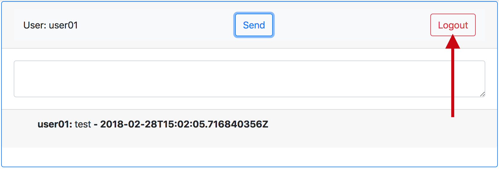

Step 1 - Create a new Project Space
In the Wetty terminal, create a new project.
oc new-project s2i-userYOUR#
Step 2 - Go Get S2I Library
cd ~
go get github.com/openshift/source-to-image
Step 3 - Build the S2I Tooling
cd $GOPATH/src/github.com/openshift/source-to-image
hack/build-go.sh
export PATH=$PATH:${GOPATH}/src/github.com/openshift/source-to-image/_output/local/bin/linux/amd64/
Step 4 - Create the S2I Project
cd ~
s2i create golang-s2i golang-s2i
Now let's inspect the project directory
tree -a golang-s2i
Step 5 - Edit the Dockerfile
cd ~
cat /dev/null > ~/golang-s2i/Dockerfile
vi ~/golang-s2i/Dockerfile
Copy the following text and paste it in to the editor.
# golang-s2i
FROM fedora
ENV BUILDER_VERSION 1.0
ENV HOME /opt/app-root
ENV GOPATH $HOME/gopath
ENV PATH $PATH:$GOROOT/bin:$GOBIN
LABEL io.k8s.description="Platform for building go based programs" \
io.k8s.display-name="gobuilder 0.0.1" \
io.openshift.expose-services="8080:http" \
io.openshift.tags="gobuilder,0.0.1" \
io.openshift.s2i.scripts-url="image:///usr/local/s2i" \
io.openshift.s2i.destination="/opt/app-root/destination"
RUN yum clean all && \
yum install -y git-remote-bzr \
golang \
glide && \
yum clean all && rm -rf /var/cache/yum/*
COPY ./s2i/bin/ /usr/local/s2i
RUN useradd -u 1001 -r -g 0 -d ${HOME} -s /sbin/nologin -c "Default Application User" default && \
mkdir -p /opt/app-root/destination/{src,artifacts} && \
chown -R 1001:0 $HOME && \
chmod -R og+rwx ${HOME}
WORKDIR ${HOME}
USER 1001
EXPOSE 8080
To exit vi:
shift+z
shift+z
Step 6 - Edit the Assemble Script
cat /dev/null > ~/golang-s2i/s2i/bin/assemble
vi ~/golang-s2i/s2i/bin/assemble
Copy the following into the editor.
#!/bin/bash
#
# S2I assemble script for the 'golang-s2i' image.
export GO_REPO=$(echo $OPENSHIFT_BUILD_SOURCE | sed --expression='s/\.git//g' | sed --expression='s/https:\/\///g')
if [ -z "$GO_REPO" ]; then
export GO_REPO=$(grep ^package /opt/app-root/destination/src/glide.yaml | sed 's/package: //')
fi
mkdir -p $GOPATH/src/$GO_REPO
# Copy the source
cp -ar /opt/app-root/destination/src/* $GOPATH/src/$GO_REPO
rm -rf /opt/app-root/destination/src/*
# Restore build artifacts
if [ "$(ls /opt/app-root/destination/artifacts/ 2>/dev/null)" ]; then
echo "Using artifacts from previous build."
mv /opt/app-root/destination/artifacts/vendor $GOPATH/src/$GO_REPO/vendor
else
pushd $GOPATH/src/$GO_REPO
echo "Obtaining artifacts."
glide install -v
popd
fi
go build -o goexec $GO_REPO
To exit vi:
shift+z
shift+z
Step 7 - Edit the Run Script
cat /dev/null > ~/golang-s2i/s2i/bin/run
vi ~/golang-s2i/s2i/bin/run
Copy the following into the editor.
#!/bin/bash
exec /opt/app-root/goexec $ARGS
To exit vi:
shift+z
shift+z
Step 8 - Edit the Save Artifacts Script
cat /dev/null > ~/golang-s2i/s2i/bin/save-artifacts
vi ~/golang-s2i/s2i/bin/save-artifacts
Copy the following into the editor.
#!/bin/bash
export GO_REPO=$(echo $OPENSHIFT_BUILD_SOURCE | sed --expression='s/\.git//g' | sed --expression='s/https:\/\///g')
if [ -z "$GO_REPO" ]; then
export GO_REPO=$(grep ^package /opt/app-root/destination/src/glide.yaml | sed 's/package: //')
fi
cd $GOPATH/src/$GO_REPO
tar cf - vendor
To exit vi:
shift+z
shift+z
Step 9 - Edit the Usage Script
cat /dev/null > ~/golang-s2i/s2i/bin/usage
vi ~/golang-s2i/s2i/bin/usage
Create your own script! Use the following as an example.
#!/bin/bash
echo "Hello Golang"
To exit vi:
shift+z
shift+z
Step 10 - Create the Golang S2I Builder Image
Create a new build for the Golang S2I builder image
cd ~
oc new-build golang-s2i/ --to=golang-s2i
Start the new build for the Golang S2I builder image
oc start-build golang-s2i --from-dir=golang-s2i/
Step 11 - Wait for Build to Complete
Watch the deployment
oc logs -f bc/golang-s2i
Step 12 - Deploy the App from the S2I Builder Image
oc new-app https://github.com/kevensen/openshift-gochat-client.git --image-stream=golang-s2i --env ARGS="-host :8080 -chatServer gochat-server.gochat-server.svc.cluster.local:8080 -templatePath /opt/app-root/gopath/src/github.com/kevensen/openshift-gochat-client/templates -logtostderr -insecure"
Step 13 - Expose the App
oc expose svc openshift-gochat-client
Step 14 - Annotate the Service Account to Use OpenShift Authorization
As in the previous lab, we must annotate the service account for the Gochat Client to communicate to the OpenShift API for user credential verification.
oc annotate sa/default serviceaccounts.openshift.io/oauth-redirectreference.1='{"kind":"OAuthRedirectReference","apiVersion":"v1","reference":{"kind":"Route","name":"openshift-gochat-client"}}' --overwrite
oc annotate sa/default serviceaccounts.openshift.io/oauth-redirecturi.1=auth/callback/openshift --overwrite
Step 15 - Sign in to the App
Click the blue "Login" button.
Log in to the app with your OpenShift credentials. The workshop moderator will provide you with the URL, your username, and password.

Step 16 - Test the App
Send a message!
Step 17 - Logout

Workshop Details
| Domain |

|
|
| Workshop | ||
| Student ID |